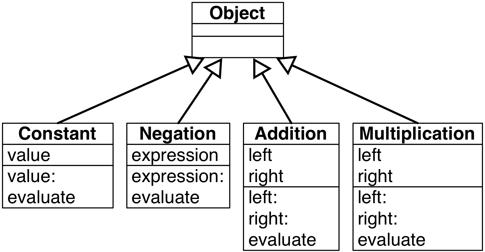
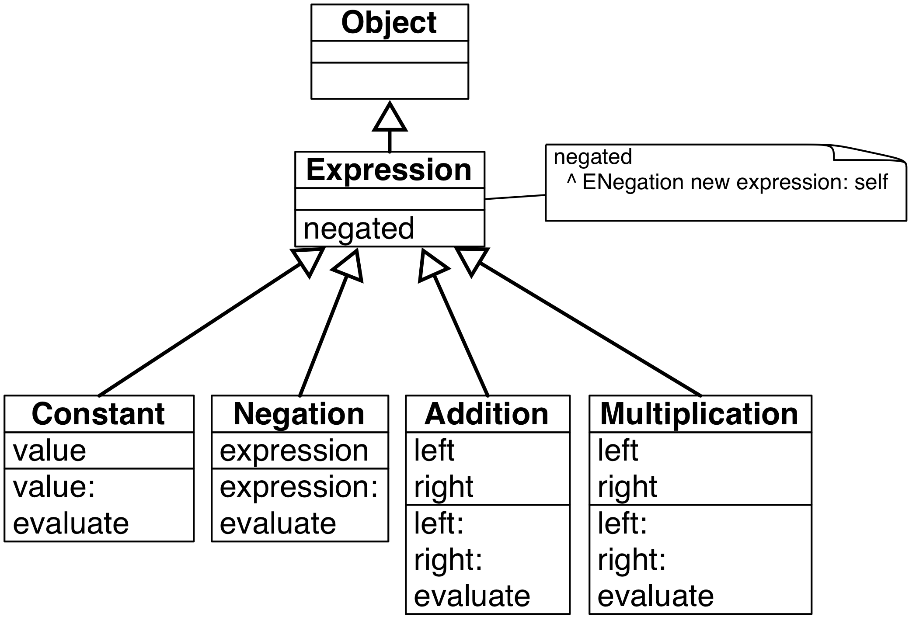
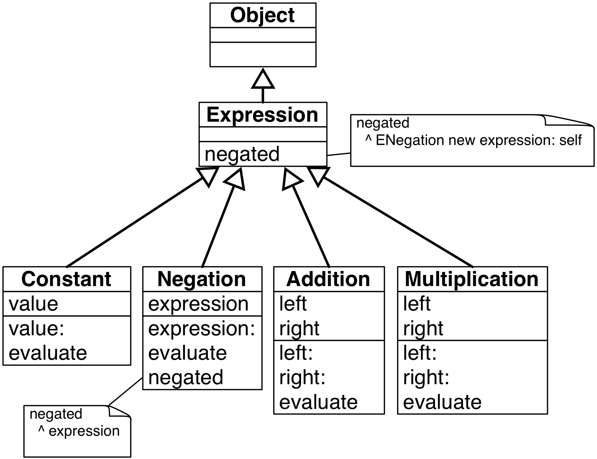
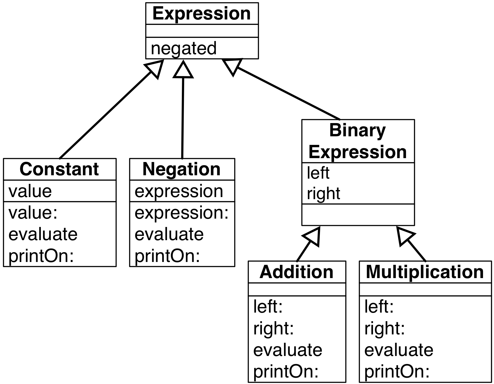
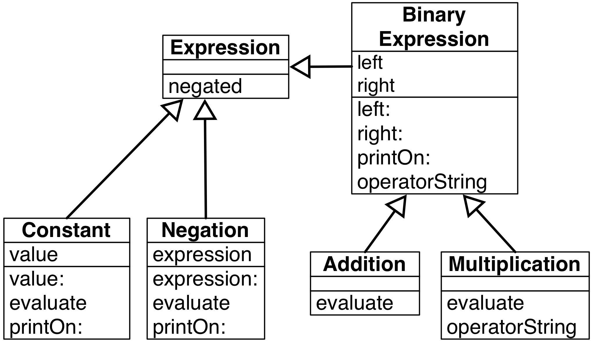

15 A little expression interpreter
In this chapter you will build a small mathematical expression interpreter. You will be able to build an expression such as (3 + 4) * 5 and then ask the interpreter to compute its value. You will revisit tests, classes, messages, methods, and inheritance. You will also see an example of expression trees similar to the ones that are used to manipulate programs. Compilers and code refactorings as offered in Pharo and many modern IDEs work by performing manipulations on these trees. In volume two of this book, we will extend this example to present the Visitor design pattern.
15.1 Starting with constant expressions and a test
We start with constant expressions. A constant expression is an expression whose value is always the same, obviously.
Let us start by defining a test case class as follows:
TestCase << #EConstantTest
package: 'Expressions'We decided to define one test case class per expression class, even if the classes will not contain many tests to begin with. This way makes it easier to define new tests and navigate them.
Let us write a first test making sure that when we create a constant, sending it the evaluate message returns its value:
EConstantTest >> testEvaluate
self assert: (EConstant new value: 5) evaluate equals: 5When you compile such a test method, the system should prompt you define the class EConstant. Let the system drive you. Since we need to store the value of a constant expression, let us add an instance variable value to the class definition.
At the end you should have the following definition for the class EConstant:
Object << #EConstant
slots: { #value };
package: 'Expressions'We define the method value: to set the value of the instance variable value.
It is simply a method that takes one argument and stores it in the value instance variable:
EConstant >> value: anInteger
value := anIntegerYou should define the method evaluate to return the value of the constant.
EConstant >> evaluate
... Your code ...Your test should now pass.
15.2 Negation
Now we can start to work on negation of expressions. Let us write a test. Define a new test case class named ENegationTest.
TestCase << #ENegationTest
package: 'Expressions'The test testEvaluate shows that negation applies to an expression (here a constant), and that when we evalute it we get the negated value of the constant:
ENegationTest >> testEvaluate
self
assert:
(ENegation new expression: (EConstant new value: 5)) evaluate
equals: -5Let us execute the test and let the system help us to define the class. A negation defines an instance variable to hold the expression that it negates:
Object << #ENegation
slots: { #expression };
package: 'Expressions'We define a setter method to be able to set the negated expression:
ENegation >> expression: anExpression
expression := anExpressionNow the evaluate method should request the evaluation of the expression and negate it. To negate a number we would suggest sending the message negated:
ENegation >> evaluate
... Your code ...
Following the same steps as above, we will now add addition and multiplication of expressions. Then we will make the system a bit easier to manipulate, and revisit its design.
15.3 Adding expression addition
To add an expression that supports addition we start by defining a test case class and a simple test:
TestCase << #EAdditionTest
package: 'Expressions'A simple test for addition is to make sure that we add correctly two constants:
EAdditionTest >> testEvaluate
| ep1 ep2 |
ep1 := EConstant new value: 5.
ep2 := EConstant new value: 3.
self assert: (EAddition new right: ep1; left: ep2) evaluate equals: 8
You should define the class EAddition. It will have two instance variables for the two subexpressions it adds:
EExpression << #EAddition
slots: { #left . #right };
package: 'Expressions'Define the two corresponding setter methods right: and left:.
Now you can define the evaluate method for addition:
EAddition >> evaluate
... Your code ...To make sure that our implementation is correct we can also test that we can add negated expressions. It is always good to add tests that cover different scenarios:
EAdditionTest >> testEvaluateWithNegation
| ep1 ep2 |
ep1 := ENegation new expression: (EConstant new value: 5).
ep2 := EConstant new value: 3.
self
assert: (EAddition new right: ep1; left: ep2) evaluate
equals: -2
15.4 Multiplication
We do the same for multiplication. Create a test case class named EMultiplicationTest, a test, a new class EMultiplication, a couple of setter methods and finally a new evaluate method. Let us do so quickly and without further comment:
TestCase << #EMultiplicationTest
package: 'Expressions'EMultiplicationTest >> testEvaluate
| ep1 ep2 |
ep1 := (EConstant new value: 5).
ep2 := (EConstant new value: 3).
self
assert:
(EMultiplication new right: ep1; left: ep2) evaluate
equals: 15Object << #EMultiplication
slots: { #left . #right };
package: 'Expressions'EMultiplication >> right: anExpression
right := anExpressionEMultiplication >> left: anExpression
left := anExpressionEMultiplication >> evaluate
... Your code ...15.5 Stepping back
It is interesting to look at what we have built so far. We have a group of classes whose instances can be combined to create complex expressions. Each expression is, in fact, a tree of subexpressions as shown in Figure 15.2. The figure shows two main trees: one for the constant expression 5, and one for the expression -5 + 3. Note that the diagram represents the number 5 as an object because in Pharo even small integers are objects, in the same way that the instances of EConstant are objects.
Messages and methods
The implementation of the evaluate message is worth discussing. What we can see is that different classes understand the same message but execute different methods as shown in Figure 15.3.
A message represents an intent: it represents what should be done. A method represents a specification of how something should be executed.
What we see is that sending the message evaluate to an expression is making a choice out of the different available implementations of the message. This point is central to object-oriented programming.
Sending a message is making a choice from among all the methods with the same name.
About common superclass
Up until now we did not see the need to have an inheritance hierarchy, because there is not much that can be shared or reused. But at this point adding a common superclass would be useful to convey to the reader of the code, or someone who wanted to extend the library, that some concepts in our package, represented as messages, are related, and are variations of a general idea.
Design corner: About the addition and multiplication model
We could have just one class called, for example, BinaryOperation, and it could have an operator instance variable, either addition or multiplication. This solution would work but, as usual, having a working program does not mean that its design is any good.
In particular having a single class would force us to start to write conditional logic in evaluate based on the operator as follows:
BinaryExpression >> evaluate
operator = #+
ifTrue: [ left evaluate + right evaluate ]
ifFalse: [ left evaluate * right evaluate]There are ways in Pharo to make such code more compact but we do not want to use them at this stage. (For the interested reader, look for the message perform: that can execute a method based on its name).
This is annoying because the execution engine itself is made to select methods for us so we want to bypass it using an explicit conditional. In addition when we add power, division, and subtraction we will also have to add more cases to our conditional, making the code less readable and more fragile.
As we will see as we read further, one of the key messages of this book is sending a message is making a choice between different implementations. To be able make that choice we should have different implementations, which implies having different classes.
Classes represent choices whose methods can be selected in reaction to a message. Having many little classes is better than few large ones.
What we could do is to introduce a common superclass between EAddition and EMultiplication but keep the two subclasses. We will do this later in the chapter.
15.6 Negated as a message
Negating an expression is expressed in a verbose way. We have to create explicitly each time an instance of the class ENegation as shown in the following snippet:
ENegation new expression: (EConstant new value: 5)We propose defining a message negated on the expressions themselves that will create such instance of ENegation. With this new message, the previous expression can be reduced to:
(EConstant new value: 5) negatednegated message for constants
Let us write a test to make sure that we capture what we want.
EConstantTest >> testNegated
self assert: (EConstant new value: 6) negated evaluate equals: -6And now we can simply implement it as follows:
EConstant >> negated
^ ENegation new expression: selfnegated message for negations
ENegationTest >> testNegationNegated
self assert: (EConstant new value: 6) negated negated evaluate equals: 6ENegation >> negated
^ ENegation new expression: selfThis definition is not the best we can do since, in general, it is bad practice to hardcode the class usage inside the class. A better definition would be:
ENegation >> negated
^ self class new expression: selfBut for now we will keep the first one for the sake of simplicity.
negated message for additions
We proceed similarly for additions:
EEAdditionTest >> testNegated
| ep1 ep2 |
ep1 := EConstant new value: 5.
ep2 := EConstant new value: 3.
self assert: (EAddition new right: ep1; left: ep2) negated evaluate equals: -8EAddition >> negated
Your codenegated message for multiplications
And finally for multiplications:
EMultiplicationTest >> testEvaluateNegated
| ep1 ep2 |
ep1 := EConstant new value: 5.
ep2 := EConstant new value: 3.
self assert: (EMultiplication new right: ep1; left: ep2) negated evaluate equals: -15EMultiplication >> negated
... Your code ...Now all your tests should pass, and it is a good moment to save your package.
15.7 Annoying repetition
Let us step back and look at what we have. We have a working program - but object-oriented design is meant to bring the code up to a higher standard than merely working!
Similar to the situation with the evaluate message and methods, we see that the functionality of negated is distributed over different classes. What is annoying is that we repeat the exact same code over and over (see Figure 15.4). This is a poor design because, if we want to change the behavior of negation tomorrow, we will have to change it four times while really only once should be enough.
What are the solutions?
- We could define another class,
Negator, that would do the job. Each of our current classes would delegate to it. But it does not really solve our problem since we will have to duplicate all the message sends to callNegatorinstances. - If we define the method
negatedin the superclass (Object) we only need one definition and it will work. Indeed, when we send the messagenegatedto an instance ofEConstantorEAdditionthe system will not find it locally but in the superclassObject. So no need to define it four times but only once in classObject. This solution is nice because it reduces the number of similar definitions of the methodnegated, but it is not good because, even if we can add methods to the classObject, this is really not a good idea;Objectis a class shared by the entire system and so we should take care not to add behavior that only makes sense for a single application. - The solution is to introduce a new superclass between our classes and the class
Object. It will have the same properties of the above solution usingObject, but without polluting it (see Figure figExpressionHierar). This is what we do in the next section.
15.8 Introducing the Expression class

Let us introduce a new class to obtain the situation depicted by Figure figExpressionHierar. We can simply do it by adding a new class:
Object << #EExpression
package: 'Expressions'and changing all the previous definitions to inherit from EExpression instead of Object. For example the class EConstant is then defined as follows:
EExpression << #EConstant
slots: { #value };
package: 'Expressions'For the first transformation we could also use the class refactor Insert superclass. Refactorings are code transformations that do not change the behavior of a program. You can find it under the Refactorings list when you open the context menu on a class. In this case it is only useful for the first change, creating the EExpression class.
Once the classes EConstant, ENegation, EAddition, and EMultiplication are subclasses of EEXpression, we should focus on the method negated. Now the method refactoring Push up will really help us.
- Select the method
negatedin one of the classes - Select the refactoring Push up
The system will define the method negated in the superclass (EExpression) and remove all the negated methods in the classes. Now achieved the hierarchy described in Figure figExpressionHierar. It is a good time to run all your tests again; they should all pass.
Now you may also be thinking that we could introduce a new class named ArithmeticExpression as a superclass of EAddition and EMultiplication. Indeed this is something that we could do to factor out common structure and behavior between the two classes. But we will do so later as it would be repetitive to do it now.
15.9 Class creation messages
So far to create an instance we have always sent a class the message new, followed by a setter method, as shown below:
EConstant new value: 5This is a good opportunity to demonstrate that we can define simple class methods that improve the class instance creation interface. While this case is simple, and has few benefits, we think that it makes a nice example. With this in mind we can write the previous example in the following way:
EConstant value: 5Notice the important difference: in the first case the message is sent to the newly created instance while in the second case it is sent to the class itself.
We define a class method in the same way we define an instance method. The only difference is that, using the code browser, you need to click on the Class side button to define the method on the class instead of an instance of the class. The class itself is an object; just like its instances, it can also be sent messages and execute methods.
Better instance creation for constants
Define the following method on the class EConstant. Notice the definition now uses EConstant class and not just EConstant to stress that we are defining the class method:
EConstant class >> value: anInteger
^ self new value: anIntegerNow define a new test to make sure that our method works correctly:
EConstantTest >> testCreationWithClassCreationMessage
self assert: (EConstant value: 5) evaluate equals: 5Better instance creation for negations
We do the same for the class ENegation:
ENegation class >> expression: anExpression
... Your code ...Of course we write a new test as follows:
ENegationTest >> testEvaluateWithClassCreationMessage
self assert: (ENegation expression: (EConstant value: 5)) evaluate equals: -5Better instance creation for additions
For addition we shall add a class method left:right: that takes two arguments:
left: anEExpression right: anEExpression2
^ self new left: anEExpression; right: anEExpression2 Since by now we are addicted to tests, we add a new one.
EEAdditionTest >> testEvaluateWithClassCreationMessage
| ep1 ep2 |
ep1 := EConstant value: 5.
ep2 := EConstant value: 3.
self assert: (EAddition left: ep1 right: ep2) evaluate equals: 8Better instance creation for multiplications
We will let you do the same for multiplication:
EMultiplication class >> left: anEExpression right: anEExpression2
... Your code ...And another test to check that everything is ok.
EMultiplicationTest >> testEvaluateWithClassCreationMessage
| ep1 ep2 |
ep1 := EConstant value: 5.
ep2 := EConstant value: 3.
self assert: (EMultiplication left: ep1 right: ep2) evaluate equals: 15Run your tests! They should all pass.
15.10 Introducing examples as class messages
As you saw when writing the tests, it is quite annoying to repeat all the expressions to generate a given tree. This is especially the case in the tests related to addition and multiplication as we can see below:
EEAdditionTest >> testNegated
| ep1 ep2 |
ep1 := EConstant new value: 5.
ep2 := EConstant new value: 3.
self assert: (EAddition new right: ep1; left: ep2) negated evaluate equals: -8One simple solution is to define some class methods returning typical instances of their classes. To define a class method remember that you should click the Class side button.
EConstant class >> constant5
^ self new value: 5EConstant class >> constant3
^ self new value: 3This way we can define the test as follows:
EEAdditionTest >> testNegated
| ep1 ep2 |
ep1 := EConstant constant5.
ep2 := EConstant constant3.
self
assert: (EAddition new right: ep1; left: ep2) negated evaluate
equals: -8The tools in Pharo support such a practice. If we tag a class method with the special annotation <sampleInstance>, the browser will show a little icon on the side and, when we click on it, it will open an inspector on the new instance:
EConstant class >> constant3
<sampleInstance>
^ self new value: 3EConstant class >> constant3
<sampleInstance>
^ self new value: 3Using the same idea we can define the following class methods to return examples of our classes:
EAddition class >> fivePlusThree
<sampleInstance>
| ep1 ep2 |
ep1 := EConstant new value: 5.
ep2 := EConstant new value: 3.
^ self new left: ep1 ; right: ep2 EMultiplication class >> fiveTimesThree
<sampleInstance>
| ep1 ep2 |
ep1 := EConstant constant5.
ep2 := EConstant constant3.
^ EMultiplication new left: ep1 ; right: ep2 What is nice about these sample instances is that they:
- help document the class by providing objects that we can directly use.
- support the creation of tests by providing objects that can serve as input for tests.
- simplify the writing of tests.
So consider using them!
15.11 Printing
It is quite annoying that we cannot really see an expression when we inspect it. We would like to get something better than 'an EConstant' and 'an EAddition' when we debug our programs. To display this information the debugger and inspector sends the message printString to objects, which by default prefix the name of the class with 'an' or 'a'.
Let us change this. To do so, we will specialize the method printOn: aStream. The message printOn: is sent to an object when a program or the system sends the message printString. From that perspective printOn: is a point of system customization that developers can take advantage of to enhance their programming experience.
Note that we do not redefine the method printString because it is more complex and printString is reused for all the objects in the system. We just have to implement the part that is specific to a given class, in this case printOn:. In object-oriented design jargon, printString is a template method, in the sense that it sets up a context which is shared by other objects, and it hosts hook methods which are program customization points. printOn: is such a hook method. The term hook comes from the fact that code of subclasses are invoked in the hook place (see Figure 15.6).
The default definition of the method printOn: as defined on the class Object is as follows: it takes the class name, checks if it starts with a vowel or not, and writes 'a ' or 'an ' to the stream, followed by the class name. This is why we got 'an EConstant' when we printed a constant expression.
Object >> printOn: aStream
"Append to the argument, aStream, a sequence of characters that
identifies the receiver."
| title |
title := self class name.
aStream
nextPutAll: (title first isVowel ifTrue: ['an '] ifFalse: ['a ']);
nextPutAll: titleA word about streams
A stream is basically a container for a sequence of objects. Once we get a stream we can either read from it or write to it. In our case we will write to the stream. Since the stream passed to printOn: is a stream expecting characters, we will add characters or strings (sequences of characters) to it. We will use the messages nextPut: aCharacter and nextPutAll: aString.
They add their arguments to the stream at the next and following positions. Don't worry - it is simple enough and we will guide you through it. You can find more information in the streams chapter of Pharo by Example available at http://books.pharo.org
Printing constant
Let us start with a test. Here we check that a constant is printed as its value.
EConstantTest >> testPrinting
self assert: (EConstant value: 5) printString equals: '5'The implementation is then simple. We just need to put the value converted as a string to the stream.
EConstant >> printOn: aStream
aStream nextPutAll: value printStringPrinting negation
For negation we should first put a '-' and then recurvisely call the printing process on the negated expression. Remember that sending the message printString to an expression should return its string representation. At least until now it will work for constants.
(EConstant value: 6) printString
>>> '6'Here is a possible definition:
ENegation >> printOn: aStream
aStream nextPutAll: '- '.
aStream nextPutAll: expression printStringBut, since all the messages are sent to the same object, this method can be rewritten as:
ENegation >> printOn: aStream
aStream
nextPutAll: '- ';
nextPutAll: expression printStringWe can also define it as follows:
ENegation >> printOn: aStream
aStream nextPutAll: '- '.
expression printOn: aStreamThe difference between the first two solutions and the third is as follows:
In the solution using printString, the system creates two streams: one for each invocation of the message printString. One for printing the expression and one for printing the negation. Once the first stream is used the message printString converts the stream contents into a string. This new string is then put inside the second stream which, at the end, is yet again converted to a string. So the first two solutions are not really efficient, as they keep converting between string and stream.
With the third solution, only one stream is created; each of the methods just put the needed string elements into it. At the end of the process, a single printString message converts it into a string.
Printing addition
Now let us write a test for printing addition:
EAdditionTest >> testPrinting
self
assert: EAddition fivePlusThree printString
equals: '( 5 + 3 )'.
self
assert: EAddition fivePlusThree negated printString
equals: '- ( 5 + 3 )'To print an EAddition: put an open parenthesis, print the left expression, put ' + ', print the right expression and put a closing parenthesis in the stream.
EAddition >> printOn: aStream
... Your code ...Printing multiplication
And now we do the same for multiplication.
EMultiplicationTest >> testPrinting
self
assert: EMultiplication fiveTimesThree negated printString
equals: '- ( 5 * 3 )'EMultiplication >> printOn: aStream
... Your code ...15.12 Revisiting the negated message for Negation
Now we can go back on negating an expression. Our implementation is not nice even if we can negate any expression and get the correct value. If you look at it carefully negating a negation could be better. Printing a negated negation illustrates well the problem: we get two minuses instead of none.
(EConstant value: 11) negated
>> '- 11'
(EConstant value: 11) negated negated
>> '- - 11'One way to fix this would be to change the printOn: definition to check if the expression that is negated is an ENegation, and not to print the '-' if it is. This solution is not ideal as we do not want to write code that explicitly checks if an object is of a given class in a conditional. Remember: we just want to send messages and then let receiving objects perform actions.
A good solution is to specialize the message negated so that when it is sent to a negation it does not create a new ENegation that wraps the receiver, but instead returns the original negated expression. If negated is sent to any of our other expressions, the method implemented in EExpression will be executed. This way the trees created by a negated message can never contain a "negated negation", but the arithmetic values obtained are still correct. To implement this solution, we just need to implement a different version of the method negated for ENegation.
Let's write a test! Since evaluating a single expression or a double negated one gives the same results, we need to define a structural test. This is what we do with the expression exp negated class = ENegation below.
NegationTest >> testNegatedStructureIsCorrect
| exp |
exp := EConstant constant5.
self assert: exp negated class = ENegation.
self assert: exp negated negated equals: exp.Now you should be able to implement the negated method for ENegation.
ENegation >> negated
... Your code ...Understanding method override
When we send a message to an object, the system looks for the corresponding method in the class of the receiver. If it is not defined there, the lookup continues in the superclass of the previous class.
By adding a method in the class ENegation, we have created the situation shown in Figure 15.7. We say that the message negated is overridden in ENegation because, for instances of ENegation, it hides the method defined in the superclass EExpression.
It works in following way:
- When we send the message
negatedto a constant, the message is not found in the classEConstant, so it is looked up in the classEExpression, where it is found and its corresponding method is applied to the receiver (the instance ofEConstant). - When we send the message
negatedto a negation, the message is found in the classENegation, and the method is then executed on the receiver, the negation expression.
negated is overridden in the class ENegation.
15.13 Introducing the BinaryExpression class
Now we will take a moment to improve our first design. We will factor out the behavior of EAddition and EMultiplication.
EExpression << #EBinaryExpression
package: 'Expressions'EBinaryExpression << #EAddition
slots: { #left . #right};
package: 'Expressions'EBinaryExpression << #EMultiplication
slots: { #left . #right };
package: 'Expressions'Now we can use again a refactoring to pull up the instance variables left and right, as well as the methods left: and right:.
Select the class EMuplication, bring up the menu and, under the Refactoring menu, select the instance variable refactoring Push Up. Then select the instance variables you want to push up.
Now you should get the following class definitions, where the instance variables are defined in the new class and removed from the two subclasses.
EExpression subclass: #EBinaryExpression
slots: { #left . #right };
package: 'Expressions'EBinaryExpression subclass: #EAddition
package: 'Expressions'EBinaryExpression << #EMultiplication
package: 'Expressions'We should get a situation similar to the one described by Figure 15.8. All your tests should still pass.

Now we can move the methods up in the same way. Select the method left: and apply the refactoring Pull Up Method. Do the same for the method right:.
Creating a template and hook method
Now we can look at the method printOn: in additions and multiplications. The definitions are very similar, only the operator changes. We cannot simply copy one of the definitions because it will not work for the other one, but what we can do is to apply the same design idea that worked between printString and printOn:: we can create a template and hooks that will be specialized in the subclasses.
We will use the method printOn: as a template with a hook redefined in each subclass.
Let define the method printOn: in EBinaryExpression and remove the other ones from the two classes EAddition and EMultiplication.
EBinaryExpression >> printOn: aStream
aStream nextPutAll: '( '.
left printOn: aStream.
aStream nextPutAll: ' + '.
right printOn: aStream.
aStream nextPutAll: ' )'You you can do the next bit manually or use the Extract Method refactoring, which creates a new method from a part of an existing method and sends a message to the new created method: select the ' + ' inside the method pane and bring the menu and select the Extract Method refactoring, and when prompt give the name operatorString.
Here is the result you should get:
EBinaryExpression >> printOn: aStream
aStream nextPutAll: '( '.
left printOn: aStream.
aStream nextPutAll: self operatorString.
right printOn: aStream.
aStream nextPutAll: ' )'EBinaryExpression >> operatorString
^ ' + 'Now we can just redefine this method in the EMultiplication class to return the required string.
EMultiplication >> operatorString
^ ' * '
15.14 What did we learn
The introduction of the class EBinaryExpression is a rich experience in terms of lessons that we can learn.
- Refactorings are more than simple code transformations. Refactorings ensure that their application does not change the behavior of programs. As we have seen, refactorings are powerful operations that really help us perform complex transformations.
- We saw that the introduction of a new superclass, and moving instance variables or method to the superclass, does not change the structure or behavior of the subclasses. This is because (1) for internal state, the structure of an instance is based on the states described by its class and all its superclasses, (2) the lookup starts in the class of the receiver and then looks in its superclasses.
- While the method
printOn:is, in itself, a hook for the methodprintString, it can also play the role of a template method. The methodoperatorStringreuses the context created by theprintOn:method which acts as a template method. In fact, each time we do aselfsend we create a hook method that subclasses can then specialize.
15.15 About hook methods
When we introduced EBinaryExpression we defined the method operatorString as follows:
EBinaryExpression >> operatorString
^ ' + 'EMultiplication >> operatorString
^ ' * 'And you may wonder if it was worth creating a new method in the superclass so that only one subclass redefines it.
Creating hooks is always good
Firstly, creating a hook is always a good idea because you rarely know how your system will be extended in the future. To show this, we suggest you to add raising to power and division, and see how this can now be done with one class and two methods per new operator.
Avoid not documenting hooks
Secondly, we could have just defined one method operatorString in each subclass and no method in the superclass EBinaryExpression. It would have worked because EBinaryExpression is not meant to have direct instances. Therefore there is no risk that a printOn: message is sent to one of its instance and cause an error because no method operatorString is found.
The code would have looked like the following:
EAddition >> operatorString
^ ' + 'EMultiplication >> operatorString
^ ' * 'But such a design is not great because, when extending from the class, developers will have to guess by reading the subclass definitions that they should also define a method operatorString. A better solution would be to define an abstract method in the superclass:
EBinaryExpression >> operatorString
^ self subclassResponsibilityUsing the message subclassResponsibility declares that a method is abstract and does nothing except force its redefinition in subclasses; a subclass must redefine it explicitly. Using this approach we get the final situation represented in Figure 15.10.
In the solution presented before (section 15.13) we decided to go for the simplest fix by using one of the operator strings (' + ') as a default definition for the hook in the superclass EExpression. We did this on purpose in order to have this discussion. It was not a good solution since it used a value only useful to a specific subclass in the superclass. It is better to define a default value for a hook in the superclass only when this default value can be used in subclasses, both now and in the future.
Note that we should also define evaluate as an abstract method in EExpression to indicate clearly that each subclass should define an evaluate.
15.16 Variables
Up until now our mathematical expressions have been rather limited. We have only manipulated constant-based expressions. What we would like is to be able to manipulate variables too. Here is a simple test to show what we mean: we define a variable named 'x' and then we can later specify that 'x' should take a given value.
Let us create a new test class named EVariableTest and define a first test testValueOfx.
EVariableTest >> testValueOfx
self
assert: ((EVariable new id: #x) evaluateWith: {#x -> 10} asDictionary)
equals: 10.Some technical points
Let us explain a bit what we are doing with the expression {#x -> 10} asDictionary. We should be able to specify that a given variable name is associated with a given value. For this we create a dictionary. A dictionary is a data structure for storing keys and their associated values. Here a key is the variable name and the value its associated value. Let us present some details first.
Dictionaries
A dictionary is a data structure containing pairs of keys and values, through which we can access the value of a given key. It can use any object as key and any object as a value. Here we simply use a symbol #x since symbols are unique within the system and as such we are sure that we cannot have two keys looking the same but having different values.
| d |
d := Dictionary new
at: #x put: 33;
at: #y put: 52;
at: #z put: 98.
d at: y
>>> 52 The previous dictionary can be written more concisely as {#x -> 33 . #y -> 52 . #z -> 98} asDictionary.
{#x -> 33 . #y -> 52 . #z -> 98} asDictionary at: #y
>>> 52 Dynamic Arrays
The expression { } creates a dynamic array. Dynamic arrays execute their expressions and store the resulting values.
{2 + 3 . 6 - 2 . 7-2 }
>>> #(5 4 5)Pairs
The expression #x -> 10 creates a pair with a key and a value.
| p |
p := #x -> 10.
p key
>>> #x
p value
>>> 10Back to variable expressions
If we go a step further, we want to be able to build more complex expressions where, instead of only having constants, we can manipulate variables. This way we will be able to build more advanced behavior such as expression derivations.
EExpression << #EVariable
slots: { #id };
package: 'Expressions'EVariable >> id: aSymbol
id := aSymbolEVariable >> printOn: aStream
aStream nexPutAll: id asStringWe need to pass bindings (a binding is a key-value pair) when evaluating a variable. The value of a variable is the value of the binding whose key is the name of the variable.
EVariable >> evaluateWith: aBindingDictionary
^ aBindingDictionary at: idYour tests should all pass at this point.
For more complex expressions (the ones that interest us) here are two tests:
EVariableTest >> testValueOfxInNegation
self assert: ((EVariable new id: #x) negated
evaluateWith: {#x -> 10} asDictionary) equals: -10What the second test shows is that we can have an expression and given a different set of bindings the value of the expression will differ.
EVariableTest >> testEvaluateXplusY
| ep1 ep2 add |
ep1 := EVariable new id: #x.
ep2 := EVariable new id: #y.
add := EAddition left: ep1 right: ep2.
self
assert: (add evaluateWith: { #x -> 10 . #y -> 2 } asDictionary)
equals: 12.
self
assert: (add evaluateWith: { #x -> 10 . #y -> 12 } asDictionary)
equals: 22Non working approaches
A non-working solution would be to add the following method to EExpression
EEXpression >> evaluateWith: aDictionary
^ self evaluateHowever it does not work for at least the following reasons:
- It does not use its argument, and so it only works for trees composed exclusively of constants.
- When we send a message
evaluateWith:to an addition, this message is then turned into anevaluatemessage sent to each of its subexpressions, not anevaluateWithmessage.
Alternatively we could add the binding to the variable itself, and only provide an evaluate message as follows:
(EVariable new id: #x) bindings: { #x -> 10 . #y -> 2 } asDictionaryBut it defeats the purpose of what a variable is! We should be able to give different values to a variable embedded inside a complex expression.
The solution: adding evaluateWith:
The solution is simple but far-reaching: we should change all the implementations and message sends from evaluate to evaluateWith:! But since this is a tedious task we will use the refactor Add Parameter on our evaluate method.
Since a refactoring applies itself on the complete system, we need to be a bit cautious because other Pharo classes also implement methods named evaluate, and we really do not want to impact them.
So here are the steps that we should follow:
- Select the Expression package.
- Choose Scoped View from the toggle underneath the packages section.
- Select one of the implementations of
evaluate. - Select the Add argument refactoring: type
evaluateWith:as method selector and proceed when prompted for a default valueDictionary new. This last expression is needed because the engine will rewrite all the messagesevaluatebutevaluateWith: Dictionary new. - The system is performing many changes. Check that they only affect your classes and accept them all.
A test like the following one:
EConstant >> testEvaluate
self assert: (EConstant constant5) evaluate equals: 5is transformed to:
EConstant >> testEvaluate
self assert: ((EConstant constant5) evaluateWith: Dictionary new) equals: 5Your tests should nearly all pass except the ones on variables. Why do they fail?
Because the refactoring transformed message sends of evaluate to evaluateWith: Dictionary new; it did not forward the bindings dictionary to the evaluateWith messages sent to the subexpressions.
EAddition >> evaluateWith: anObject
^ (right evaluateWith: Dictionary new) + (left evaluateWith: Dictionary new)This method should be transformed as follows: we should pass the binding to each of the recursive evaluateWith: message sends.
EAddition >> evaluateWith: anObject
^ (right evaluateWith: anObject) + (left evaluateWith: anObject)Do the same for the multiplications:
EMultiplication >> evaluateWith: anObject
^ (right evaluateWith: anObject) * (left evaluateWith: anObject)And finally negations:
ENegation >> evaluateWith: anObject
^ (expression evaluateWith: anObject) negated15.17 Conclusion
This little exercise was full of learning potential. Here is a little summary:
- A message specifies an intent while a method is a named list of Pharo instructions. We often have one message and many methods with the same name.
- Sending a message is finding the method corresponding to the message selector: this selection is based on the class of the object receiving the message. When we look for a method we start in the class of the receiver and go up through the inheritance chain.
- Tests are a good way to specify what we want to achieve and then to verify after each change that we did not break something. Tests do not prevent bugs, but they help build confidence in the changes we make.
- Refactorings are more than simple code transformations. Usually refactorings sufficiently aware of their context that their application does not change the behavior of the program. As we saw, refactorings are powerful operations that really help us perform complex changes.
- We saw that the introduction of a new superclass, and moving instance variables or methods to that superclass, does not change the structure or behavior of the subclasses. This is because (1) for instance variables, the internal structure of an instance is based on the state of its class and all of its superclasses, and (2) the lookup starts in the class of the receiver and then goes through the superclasses in order.
- Each time we send a message we create a potential place (a hook) for subclasses to get their code definition used in place of the superclass's one (the template).